Lock In Your Price
Solving the biggest problem in pools betting: Customers not getting a guaranteed return for their stake.
Research identified that the biggest obstacle to betting with the Tote is that customers do not get a guaranteed return on their bet. For example, fixed odds allow customers to take a price, and their payout will not change as the market matures; with the Tote, however, the payout keeps changing until the pool closes. For high-staking customers, seeing a guaranteed return is a key motivator to bet. The designs went through several iterations with stakeholder feedback before being validated with customers. I iterated on the designs based on that feedback and created an AI prototype to show stakeholders a realised version of the initiative.
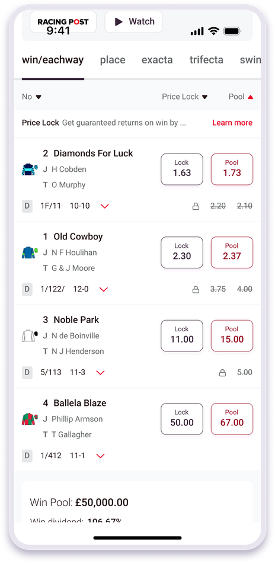
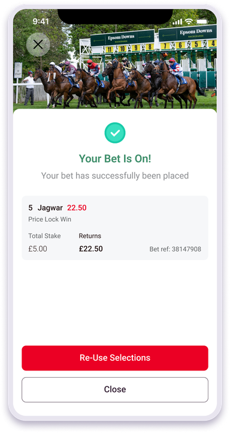
The Problem
- When a customer places a bet and the price is 5.00, they expect to be paid out at that price, so they are surprised when the final payout is 3.50 once the pool has closed and matured.
- The business wanted to increase the retention of our racing customers.
Research
Customer Surveys
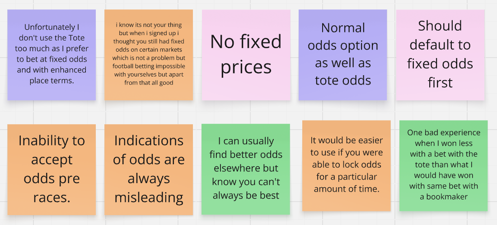
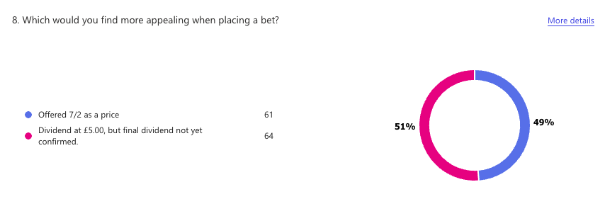
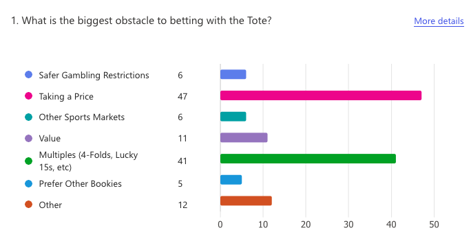
Insight
Quarterly surveys identified that having no fixed prices was the biggest obstacle to customers betting with the Tote. A focused survey showed that customers are split 50/50 on whether they would take a worse fixed price in that moment, or a changeable dividend.
Hypothesis
By giving customers the option of taking a fixed price for their bet, they are less likely to bet with our competitors, therefore increasing their lifetime average spend as retention rates increase.
My Design Process
-
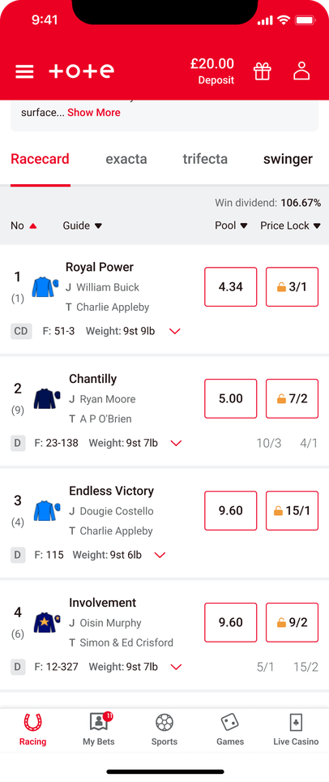
First Wireframes
 Unclear which is the price-locked value at a glance.
Unclear which is the price-locked value at a glance.- Confusing why one value is a decimal and the other a fraction.
-
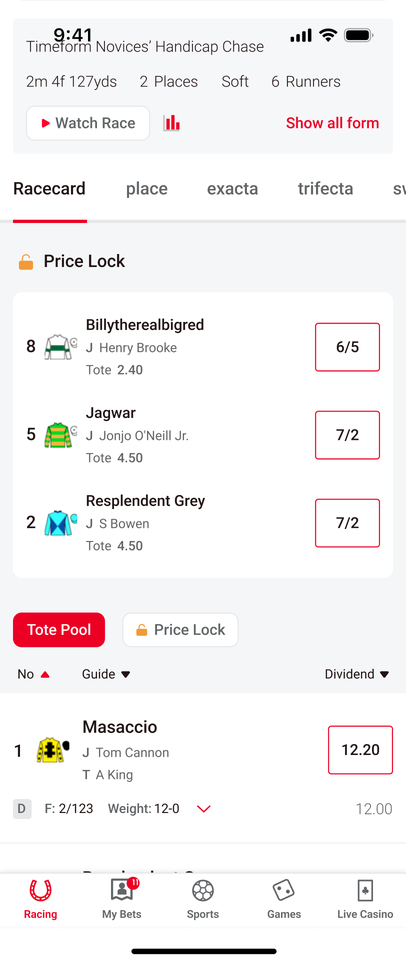
Second Iteration
- Stakeholders did not want locked prices behind a tab.
- Customers can’t compare the prices.
-
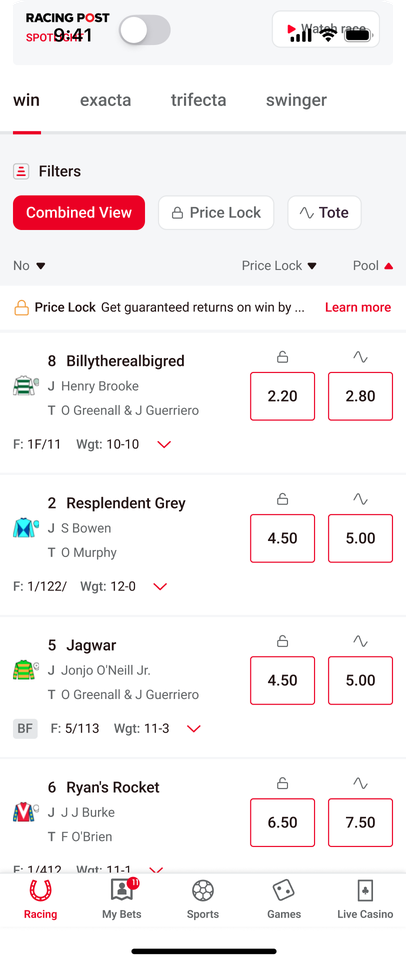
Third Iteration
 Customers can compare prices and make an informed choice.
Customers can compare prices and make an informed choice.- Lock and Pool icons are unclear at a glance.
-
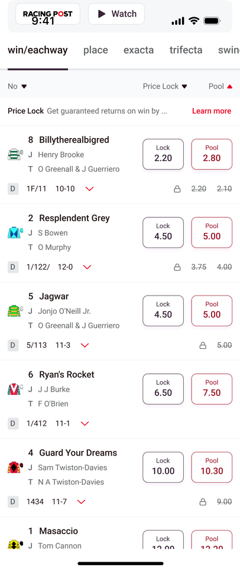
Design for Validation
- Locked price and pool price are clearly labelled.
- Different colours added visual contrast between the two prices.
Validation
Six interviews were conducted with Tote customers. They were shown a Figma prototype, and I guided them on which horses to choose in order to complete the journey.
Interview Insights
-
3/6 selected locked value
The functionality appealed to customers, but with the two prices side by side, the pool price was still attractive because it was the larger number.
-
Value the biggest motivator
This contradicts the stakeholder view that customers aren’t price-sensitive. However, value is subjective, so how do we make customers feel they’re getting value for their money?
-
Further research required
The static racecard didn’t reflect what customers would use in real life, where prices change constantly, and this would affect their decision-making.
Iterations
Interviews showed that customers did not realise they could switch between the two prices on the betslip when it was in a drop-down. I changed it to a toggle to make both prices more visible. I also reduced the amount of red so it did not compete with error messaging for the customer’s attention.
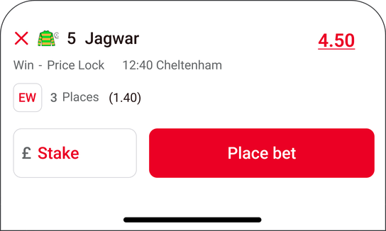
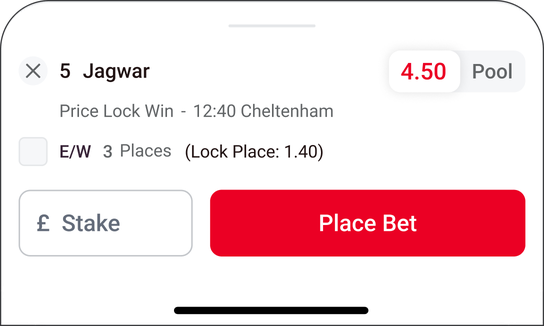
User Journey
-
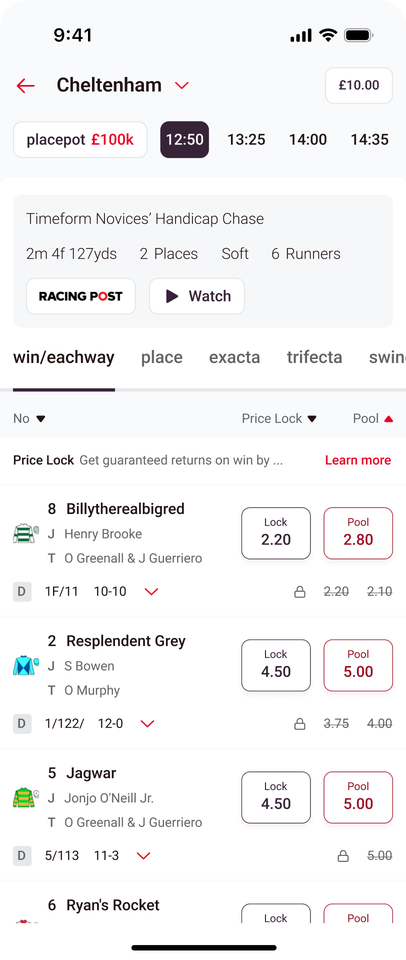
Racecard
-
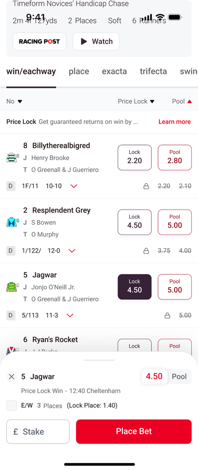
Quickbet
-
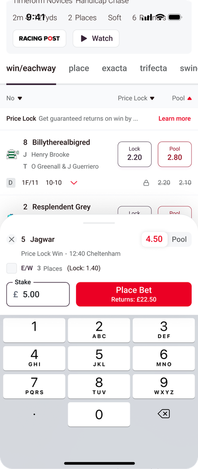
Stake Inputted
-
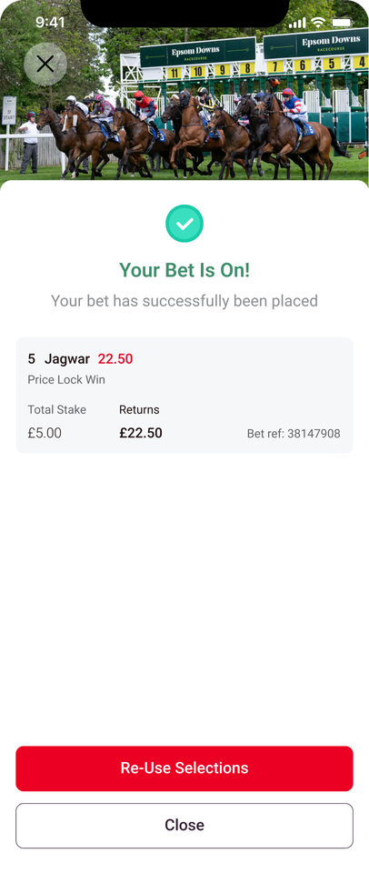
Bet Receipt
Key Design Decisions
Racecard Redesign
Reducing the amount of red
The Tote’s primary colour is red, which is used throughout the original racecard: header, footer, buttons, tabs and chips. I used the primary colour more strategically so it would stand out rather than add to the noise. I presented this to marketing, and they bought into the more restrained use of red.
Sticky Headers
Improving the navigation for customers.
There is a lot of scrolling for customers, as there are often a lot of horses in a race. Keeping the relevant navigation fixed at the top of the view lets customers easily move to another race and add more horses to their betslip.
Animation
Applying psychological theory to the customer journey.
Customers experience an emotional high when they place their bet, so I added animation to the receipt to maximise this effect by emphasising the success messaging.
AI Prototype
To test with a “real-life” example, I built an AI prototype so that customers can select horses of their choosing rather than being directed. The next step is to increase the fidelity of the prototype so I can help the front-end developers build some of the components.
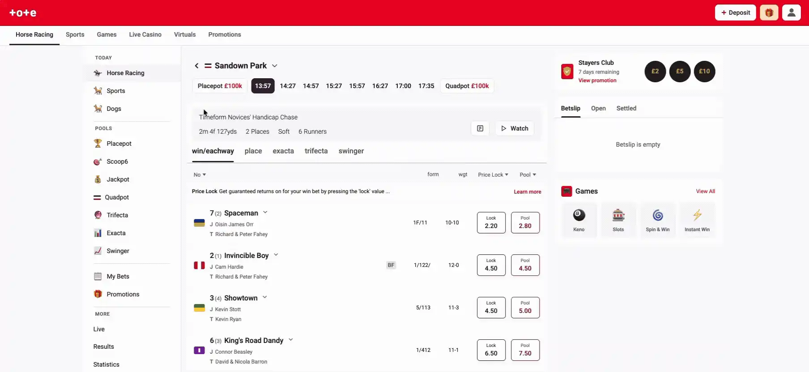
You’re up to date with my current project